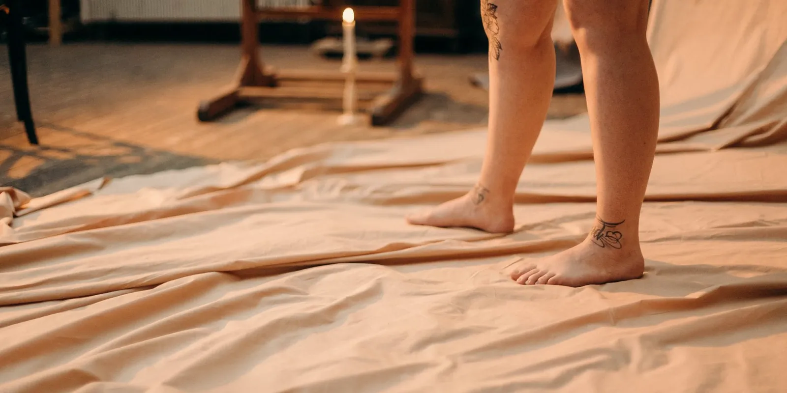

Piernas cansadas y pesadas: causas frecuentes
Llegas al final del día y sientes las piernas cansadas, pesadas, como si arrastraras algo. No es tu imaginación, y tampoco es algo con lo que tengas que resignarte a vivir. Te contamos qué suele estar detrás de esta sensación y cuándo conviene consultar.

Sentir las piernas cansadas al terminar la jornada es una de las molestias más comunes que vemos en consulta, sobre todo en mujeres. Esa pesadez, ese "peso extra" que se instala en las pantorrillas o los tobillos, puede tener varios orígenes: desde pasar muchas horas de pie o sentada, hasta un problema circulatorio que vale la pena revisar. Entender la diferencia te ayuda a saber qué hacer y, sobre todo, cuándo pedir ayuda.
¿Por qué sientes las piernas cansadas y pesadas?
Esta sensación aparece cuando algo dificulta que la sangre y los líquidos regresen con normalidad desde las piernas hacia el corazón, o cuando los músculos han trabajado de más sin el descanso ni el movimiento que necesitan. En ambos casos, el resultado se parece: pesadez, hinchazón leve y una fatiga que se acentúa conforme avanza el día.
Causas circulatorias: cuando el problema está en las venas
La causa circulatoria más frecuente es la insuficiencia venosa. Las venas de las piernas tienen pequeñas válvulas que evitan que la sangre se devuelva por efecto de la gravedad, y cuando no cierran bien, parte de esa sangre se estanca en lugar de subir hacia el corazón. El resultado: pesadez, hinchazón y, con el tiempo, várices visibles.
- Los síntomas suelen ser más notorios al final del día o después de estar mucho tiempo de pie.
- Mejoran al elevar las piernas o al caminar, porque el movimiento activa la "bomba" muscular de la pantorrilla que ayuda a impulsar la sangre.
- Los antecedentes familiares influyen bastante: si tu mamá o tu abuela tuvieron várices o piernas pesadas, es más probable que tú también las presentes.
Causas no circulatorias: cuando las venas no son las culpables
No toda pesadez en las piernas es un problema de las venas. Hay factores del día a día que producen síntomas muy parecidos:
- Estar de pie o sentada muchas horas seguidas: sin movimiento, la sangre y los líquidos tienden a acumularse en la parte baja de las piernas.
- El calor: las venas se dilatan para ayudar a bajar la temperatura corporal, lo que dificulta el retorno de la sangre y explica por qué las piernas se sienten peor en época de calor.
- Sedentarismo: la falta de movimiento debilita el efecto de bombeo que ejercen los músculos de la pantorrilla sobre las venas.
- Sobrepeso: aumenta la presión sobre las venas de las piernas y dificulta el retorno venoso.
- Embarazo y cambios hormonales: el útero en crecimiento comprime las venas pélvicas, y los cambios hormonales del embarazo, la menstruación o la menopausia favorecen la retención de líquidos.
- Algunos medicamentos: ciertos anticonceptivos, tratamientos hormonales o antiinflamatorios pueden favorecer la retención de líquidos en algunas personas.
En algunos casos, la pesadez persistente también puede relacionarse con otras condiciones médicas (como problemas de tiroides, renales o cardíacos), así que es mejor no autodiagnosticarte: si se repite con frecuencia, coméntalo con un profesional.
Otras señales que pueden acompañar la pesadez
Junto con esa sensación de pesadez, es común notar:
- Hinchazón leve en tobillos o pantorrillas, especialmente al final del día.
- Calambres nocturnos.
- Hormigueo o picazón sobre el trayecto de alguna vena.
- Aparición progresiva de arañitas vasculares o várices.
La pesadez en las piernas no es "normal" ni algo con lo que debas resignarte a vivir: en muchos casos tiene una causa identificable, y entenderla es el primer paso para sentirte mejor.
¿Cuándo conviene consultar?
Si la pesadez es ocasional y mejora con descanso, probablemente se relacione con factores del día a día. Pero conviene pedir una valoración vascular si:
- Sientes las piernas cansadas casi a diario, o notas que la molestia va a más con el tiempo.
- Ya notas várices, arañitas vasculares o hinchazón visible.
- Aparecen calambres frecuentes que interrumpen tu sueño.
- Sientes que afecta tu calidad de vida o tu capacidad de estar de pie o caminar.
Qué puedes hacer mientras tanto
Algunas medidas generales pueden ayudar a aliviar la pesadez del día a día, aunque no reemplazan una valoración si el problema persiste:
- Muévete cada cierto tiempo si trabajas muchas horas de pie o sentada; caminar unos minutos activa la circulación.
- Eleva las piernas por encima del nivel del corazón cuando descanses.
- Evita la exposición prolongada al calor directo sobre las piernas.
- Mantén un peso saludable y una rutina de actividad física regular, siempre según tu condición.
- Consulta con tu médico sobre el uso de medias de compresión, que en muchos casos pueden ayudar a mejorar el retorno venoso.
En Seravena, nuestro equipo de salud vascular valora cada caso de forma individual: no toda pesadez en las piernas necesita el mismo manejo, y la única forma de saber qué está pasando en tus venas es con una valoración clínica adecuada, que en muchos casos incluye un eco doppler venoso.
Preguntas frecuentes
¿Por qué siento las piernas cansadas y pesadas?
Esta sensación aparece cuando algo dificulta que la sangre y los líquidos regresen con normalidad desde las piernas hacia el corazón, o cuando los músculos han trabajado de más sin el descanso ni el movimiento que necesitan. El resultado es pesadez, hinchazón leve y fatiga que se acentúa conforme avanza el día.
¿Las piernas pesadas siempre son un problema de las venas?
No. Hay factores del día a día que producen síntomas muy parecidos, como estar de pie o sentada muchas horas seguidas, o el calor, que dilata las venas para bajar la temperatura corporal y dificulta el retorno de la sangre.
¿Cuándo conviene consultar por piernas cansadas?
Si las sientes cansadas casi a diario o notas que la molestia va a más con el tiempo, si ya aparecen várices, arañitas vasculares o hinchazón visible, si tienes calambres frecuentes que interrumpen tu sueño, o si afecta tu calidad de vida.